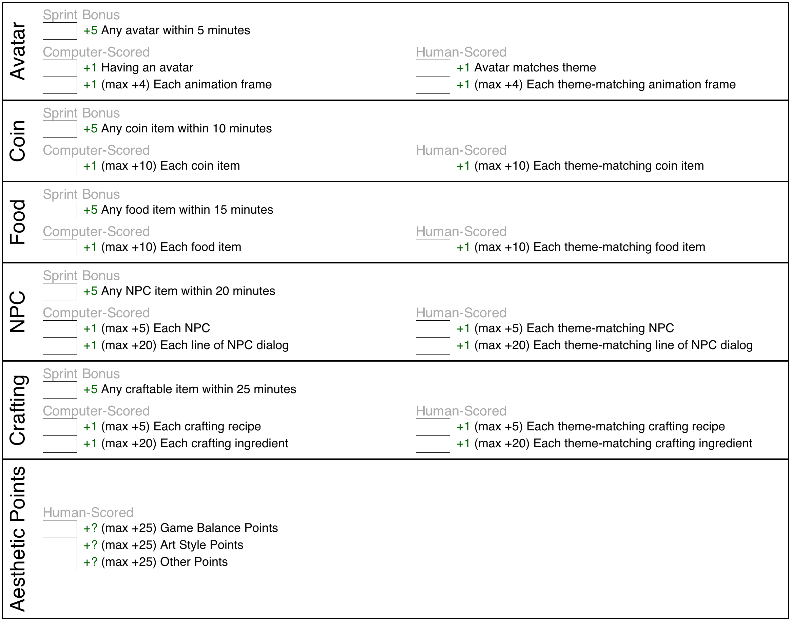
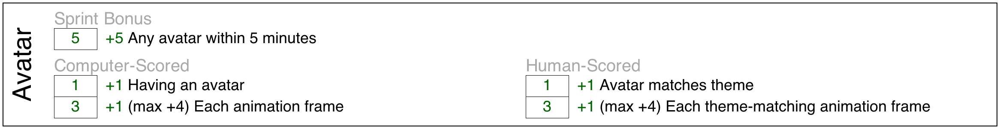
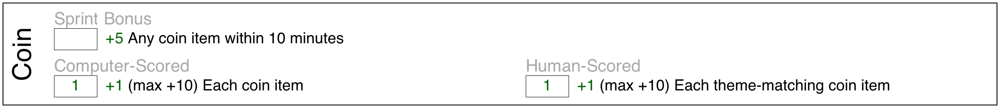
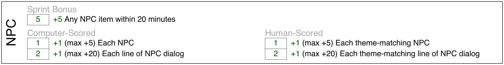
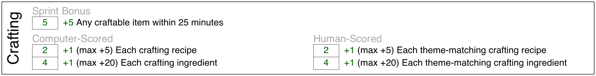

3 How are Games Scored?
Judges will use a semi-automated process score games. It is partially automated, to facilitate fast judging. But part of the score is subjective, to prevent competitors "gaming the system" – i.e. just jumping through the hoops but without actually creating a fun, playable game.
The scoring process for the upcoming Game Jam is explained on this page.
3.1 Overview
Game Type: Survival Game with Crafting
Scorable Features:
Avatar
Inventory Items
Food
Non-Player Characters
Crafting/Recipes
3.2 Score Sheet
For convenience, we’ve created this scoresheet for players, coaches, spectators, and judges to use. It is intended to serve as a quick overview of the scoring system. (For more details, though, see the following sections.)

3.3 Avatar Score
The game must have an avatar that can be moved with the arrow keys. The avatar must lose health over time and must gain health by eating food.
Sprint Bonus:
 Have a player within the first 5 minutes of competition.
Have a player within the first 5 minutes of competition.
(NOTE: To claim this sprint bonus, a competitor must signal a judge and demonstrate a working game with an avatar. Signals must be made before the 5 minute mark in order to gain the sprint bonus points.)
Computer-Scored Points:
 for having an avatar at all
for having an avatar at all per animation frame. Max
per animation frame. Max 
Human-Scored Points:
 for having an avatar that matches the theme.
for having an avatar that matches the theme. per animation frame that matches the theme. Max
per animation frame that matches the theme. Max 
Although the definition of "matching the theme" is always subjective and up to the judges’ discretions, some rules of thumb are:
If the prompt implies a main character, the avatar should look like that.
Animation frames should suggest locomotion. Example: If the avatar is a space ship, a theme-matching animation might imply some kind of propultion system. Example: If the avatar is a unicorn, a theme-matching animation might imply a unicorn walking.
3.3.1 Example - Avatar Scoring Sheet
Suppose the Game Jam prompt is announced to be: "Slimes vs Unicorns. Slimes have taken over the forest, and the unicorns must learn to survive in the desert."
Suppose that within the first 5 minutes of the competition, Marco creates a avatar that looks like a red circle. This qualifies him for a +5 sprint bonus.
Suppose he goes on to create three animation frames of unicorn walking, which his avatar use while walking and replaces the red circle with these animation frames. (The sprint bonus has already been awarded, so he does not lose the bonus points.)
Assuming nothing changes about the avatar before the end of the Game Jam, Marco’s Avatar score would end up like this:

3.4 Coins
The game must have coins/point items that can be gathered for Gold.
Sprint Bonus:
 sprint bonus. Implement at least one coin
item within the first 15 minutes of the competition.
sprint bonus. Implement at least one coin
item within the first 15 minutes of the competition.
Computer-Scored Points:
 for each coin item in game. Max
for each coin item in game. Max  .
.
Human-Scored Points:
 per coin item for theme cohesion. Max
per coin item for theme cohesion. Max  .
.
Although the definition of "matching the theme" is always subjective and up to the judges’ discretions, for some rules of thumb, see the previous section on food items. The same idea applies: Make sure these items seem like they fit with the world or would be something the avatar might use.
3.4.1 Example - Coins Scoring Sheet
Suppose we continue our example from the previous section. Marco creates one coin item – an Ancient Desert Artifact. But suppose he loses some time because he must track down a bug in his code. He ends up completing his Artifact by the 16 minute mark. This means he cannot get the sprint bonus in this category.
Assuming nothing changes, here are Marco’s scores for this category:

That’s  in this category. He’s at so far.
in this category. He’s at so far.
3.5 Food
The game must have food items that the avatar can consume in-game.
Sprint Bonus:
Have a food item within the first 10 minutes of competition.
(NOTE: To claim this sprint bonus, a competitor must signal a judge and demonstrate a working game with a food item. Signals must be made before the 10 minute mark in order to gain the sprint bonus points.)
Computer-Scored Points:
 for each food item in game. Max
for each food item in game. Max 
Human-Scored Points:
 for each food item that matches the theme. Max
for each food item that matches the theme. Max 
Although the definition of "matching the theme" is always subjective and up to the judges’ discretions, some rules of thumb are:
If the prompt implies a main character, the food should be something that avatar might "eat". Example: If the avatar is a spaceship, some "food" might be a barrel of fuel. Example: If the avatar is a unicorn, some food might be berries.
Any food items should seem like they belong in the world. A barrel of fuel probably doesn’t belong in a world full of unicorns. (The exception is, of course, if the unicorn is a robotic unicorn – in which case perhaps a barrel of fule does match the theme – but berries would not.)
3.5.1 Example - Food Scoring Sheet
Suppose (as in the example in the previous section) that Marco creates three food items:
Prickly Pears, which give the avatar
 health
healthSand Bread, which gives the avatar
 health
healthPrickly Pear Pie, which gives the avatar
 health
health
Also, suppose he created the berries within the first 10 minutes of
the competition. This would qualify him for a  sprint bonus.
sprint bonus.
Assuming nothing changes related to food items before the end of the competition, the final food score would look like:

That would be a total of points. Added to his
previous score of  , that would be points so far!
, that would be points so far!
3.6 Non-Player Characters
The game must have Non-Player Characters (NPCs).
Sprint Bonus:
 sprint bonus. Implement at least one NPC
within the first 20 minutes of the competition.
sprint bonus. Implement at least one NPC
within the first 20 minutes of the competition.
Computer-Scored Points:
 for each NPC in game. Max
for each NPC in game. Max  .
. for each line of dialog an NPC has (Max
for each line of dialog an NPC has (Max  per NPC).
per NPC).
Human-Scored Points:
 per NPC for theme cohesion. Max .
per NPC for theme cohesion. Max . for each line of dialog an NPC has that is cohesive with
the theme (Max
for each line of dialog an NPC has that is cohesive with
the theme (Max  per NPC).
per NPC).
Although the definition of "matching the theme" is always subjective and up to the judges’ discretions, here are some rules of thumb:
For the NPCs appearance – please see the section on avatars. The same aesthetic ideas apply. Make sure the NPC seems like it belongs in that world.
Lines of dialog should also seem like they are relevant. They should seem like something that NPC would say. NPCs should not all sound the same either. They should have "voices" that are distinct from each other.
3.6.1 Example - NPC Scoring Sheet
Suppose, in our running example, Marco creates 1 NPC by the 19 minute mark.
The NPC is a desert nomad with two lines of dialog about the weather in the desert and one line about how to make Prickly Pear Pie.
Marco would receive the sprint bonus of  , along
with for having an NPC and
, along
with for having an NPC and  for its lines of dialog.
Since the NPC looks it belongs in the
desert, Marco would also get an additional
for its lines of dialog.
Since the NPC looks it belongs in the
desert, Marco would also get an additional  . And
since the dialog lines are all theme-cohesive, he would
get an additional .
. And
since the dialog lines are all theme-cohesive, he would
get an additional .

That’s a total of  . He now has total.
. He now has total.
3.7 Crafting/Recipes/Tech-tree
The game must have "recipes", allowing new items to be created from existing ones.
A recipe involves three things:
Inputs. A list of input items. E.g. marshmallows, chocolate, and crackers.
Output. A single output item. E.g. a chocolate s’more.
Trigger. An in-game entity that serves as the place where the recipe can be triggered. E.g. a campfire.
Note that the word "recipe" does not imply that the inputs or outputs must be food. Here’s another example:
Inputs. A list of input items. E.g. wood and matches.
Output. A single output item. E.g. a campfire.
Trigger. An in-game entity that serves as the place where the recipe can be triggered. E.g. a firepit.
And yes, the output of one recipe can become either the inputs of another recipe or even the trigger for another recipe. For example, to make S’mores, you may have to first produce a campfire.
Sprint Bonus:
 sprint bonus. Implement at least one recipe
within the first 25 minutes of the competition.
sprint bonus. Implement at least one recipe
within the first 25 minutes of the competition.
Computer-Scored Points:
 for each recipe in game. Max
for each recipe in game. Max  .
. for each ingredient in a recipe. Max
for each ingredient in a recipe. Max  per recipe.
per recipe.
Human-Scored Points:
 for each theme-matching recipe in game. Max .
for each theme-matching recipe in game. Max . for each theme-matching ingredient in a recipe. Max
for each theme-matching ingredient in a recipe. Max  per recipe.
per recipe.
Note that all recipes must be craftable in game.
Although the definition of "matching the theme" is always subjective and up to the judges’ discretions, here are some rules of thumb:
Recipes should make sense. The inputs should, in theory, be able to produce the output. A recipe that takes a Stick and a Rock and produces a Cat doesn’t really make sense (unless the prompt suggests that such a thing can happen in the game world.)
The triggering entity should make sense. Producing food from a cooking pot makes sense. Producing a house from a cooking pot does not.
3.7.1 Example - Crafting Scoring Sheet
Suppose, in our running example, Marco creates two recipes:
Triggered at the cooking cauldron: Prickly Pears + Sand Bread can make Prickly Pear Pie.
Triggered at the cooking cauldron: Sand + Sand Grinding Rock makes Sand Bread.
Suppose he completes the first of these recipes within the first 25 minutes of the competition. Assuming nothing changes, here’s how Marco’s crafting score will end up:

That’s a total of . He now has total.
3.8 Overall Aesthetics
This section is the most subjective of all – but also (arguably) the most important to the art of game design. In this section, the judge will award between and points for the game’s overall aesthetics.
It is impossible to fully reduce an art to a simple set of rules, but here are some guidelines:
The game should be well balanced. It shouldn’t be too hard. It shouldn’t be too easy. In a survival game, this means you shouldn’t die so fast that you always lose. But there shouldn’t be so much food that surviving is trivial.
The art style should be consistent. All assets should "feel" like they belong together.
Every decision should be part of a cohesive whole. Marco’s game in our example above is pretty good. All of the items and NPCs feel like they have a desert theme. One of the NPCs mentions one of the recipes – which is a nice touch because it helps alert the player to the fact that this recipe exists.
Games will be judged by people with experience playing, designing, and analyzing games. They will leverage their own experience to decide what to award points for. Although these judgements will be subjective, competitors are encouraged to take an artistic look at the games they themselves play. What is it about certain games that make them more fun than others? What are the elements that make something fun? What are the elements that make players feel something?
At the end of the day, game design is art. Sometimes art obeys rules. Sometimes it breaks rules.
Competitors are encouraged to try both. If the judges agree with the competitor’s decisions and give points, great.
If not, don’t worry. Some of the best artists in history had to struggle before their art was recognized for what it was. Be bold. Take heart.